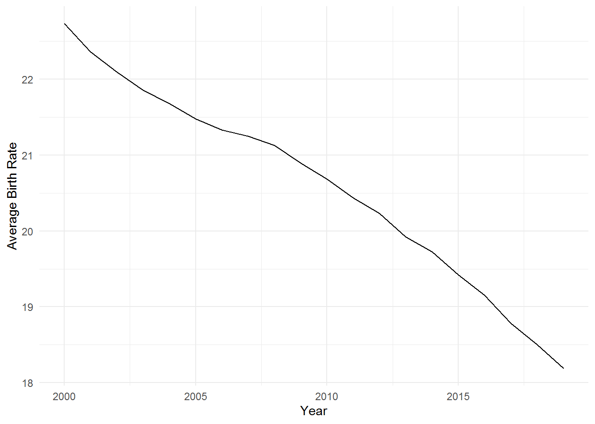

Set up an R project and generate a reproducible report using Quarto.
Load, clean, and explore a dataset on human migration, preparing it for analysis.
Manipulate data with the tidyverse to filter, group, and summarize key insights.
Create tables and visualizations to effectively communicate your findings.
Compile everything into a shareable report, ensuring your work is fully reproducible and easy to follow.
Initialize the project
Create a New RStudio Project:
Open RStudio and click File > New Project.
Select New Directory, then choose New Project.
Choose a directory for your project on your computer and give your project a name (e.g., “seminar2024”).
Click Create Project. This will create a new folder with an .Rproj file inside it. From now on, you will open your project through this file.
Set Up Your First Quarto Document:
In RStudio, go to File > New File > Quarto Document.
In the dialog box, choose HTML as the output format and give your document a title (e.g., “tutorial_1”).
Click Create. This will open a .qmd file in the editor, with a basic YAML header and a placeholder for content.
Modify the YAML Header:
Edit the YAML header to include your name and the desired output format (HTML).
Set up R, Quarto, and Citation Management
The dataset we’ll be using comes from the paper titled World’s human migration patterns in 2000–2019 unveiled by high-resolution data by Niva et al., published 2023 in Nature Human Behaviour.
Locate the dataset and paper:
Go online, find the paper and the data repository, and download the dataset.
Add new folders for “data” and “literature” to your project directory and save the files you downloaded.
Cite the paper and dataset:
Create a references.bib file in your project folder, which will contain the citation information for both the paper and the dataset repository.
Get the bibtex entries from GoogleScholar or www.doi2bib.com.
Add citations for the following:
Niva2023: The Niva et al. (2023) paper
Niva2023data: The dataset repository where the data is stored (e.g., Zenodo)
Cite both in your Quarto report and check
Change citation style:
By default, Quarto uses the apa.csl style (APA citation). Change the citation style to another format, such as Chicago, by adding the relevant .csl file to your project.
Download the .csl file from (e.g., chicago-author-date.csl).
Save the .csl file in your project folder.
Modify the YAML header to reference the new .csl file:
After citing the paper and dataset repository, render your Quarto document into HTML and verify the citations appear correctly in the style you’ve chosen. To render your Quarto document to HTML, simply click the Render button in RStudio or use the keyboard shortcut Ctrl + Shift + K (or Cmd + Shift + K on Mac).
Compare citation styles in the rendered output.
Setup R
Before working with the data, we need to install and load some key packages that will help us manipulate and clean the dataset.
Install and load the tidyverse and janitor packages.
# Install necessary packages (uncomment the install lines if the packages aren't already installed):# install.packages("tidyverse") # Collection of data manipulation and visualization packages# install.packages("janitor") # Useful for cleaning and organizing data# Load required packages:library("tidyverse")
-- Attaching core tidyverse packages ------------------------ tidyverse 2.0.0 --
v dplyr 1.1.4 v readr 2.1.5
v forcats 1.0.0 v stringr 1.5.1
v ggplot2 3.5.1 v tibble 3.2.1
v lubridate 1.9.3 v tidyr 1.3.1
v purrr 1.0.2
-- Conflicts ------------------------------------------ tidyverse_conflicts() --
x dplyr::filter() masks stats::filter()
x dplyr::lag() masks stats::lag()
i Use the conflicted package (<http://conflicted.r-lib.org/>) to force all conflicts to become errors
library("janitor")
Attache Paket: 'janitor'
Die folgenden Objekte sind maskiert von 'package:stats':
chisq.test, fisher.test
Load the data, use janitor::clean_names to adjust the variable names, and inspect the data in RStudio
# Load the datasetniva_masterdata <-readRDS("data/Niva2023/masterData.rds")# Clean variable names for consistencyniva_masterdata <-clean_names(niva_masterdata)# View the first few rows and structure of the dataset#head(niva_masterdata)#str(niva_masterdata)
Basic data manipulation with tidyverse
Filter rows of the dataset to only include national-level data.
Select columns of interest for further analysis.
Group the data by year and calculate the average birth_rate and death_rate across all countries for each year.
# Filter the dataset to only include country-level datacountrydata <- niva_masterdata |>filter(scale_level =="adm0")# Select specific variablescountrydata_selected <- countrydata |>select(year, net_mgr, birth_rate, death_rate, pop_change)# Group the data by year and summarize the average birth and death ratesyearly_summary <- countrydata |>group_by(year) |>summarise(mean_birth_rate =mean(birth_rate, na.rm =TRUE),mean_death_rate =mean(death_rate, na.rm =TRUE) )
Descriptive Tables
Use the datasummary_skim() function from the modelsummary package to generate a quick overview of the dataset.
Add a label tbl-summarystats for cross-referncing the table in quarto and a caption
library("modelsummary")# Summary statistics of the full datasetdatasummary(net_mgr + birth_rate + death_rate + pop_change ~ Mean + SD + Min + Max + N,data = countrydata_selected,output ="tinytable")
Table 1: Summary statistics
Mean
SD
Min
Max
N
net_mgr
-0.36
12.49
-99.58
178.69
4440
birth_rate
20.59
11.07
0.00
58.85
4980
death_rate
7.42
3.81
0.00
23.81
4980
pop_change
13.77
56.65
-825.78
2763.92
4980
Visualize data
Visualize the average birth_rate over time using a line chart using ggplot2 (which was already loaded as part of the tidyverse).
# Create a summary dataset for visualizationyearlydata <- countrydata |>group_by(year) |>summarise(mean_birth_rate =mean(birth_rate, na.rm =TRUE)) |>arrange(year)# Plot the average birth rate over timeggplot(yearlydata, aes(x = year, y = mean_birth_rate)) +geom_line() +labs(x ="Year", y ="Average Birth Rate") +theme_minimal()

Figure 1: Average birth rate over time
Render the Quarto Report
Reference Figures and Tables
After you have generated the summary table and the basic figure, render your Quarto document into HTML.
Reference both the table and the figure in your report
Make sure the summary table and figure appear correctly in the rendered output.
Inline Data Reporting
You can use inline R code for dynamic reporting. Whenever the data changes or is updated, these numbers will update automatically when you render the document again. This is particularly useful when working with large or frequently updated datasets.
Calculate the number of unique countries and the range of years in the dataset.
Use these numbers inline in your text.
# Calculate the number of unique countries and the range of yearsnum_countries <- niva_masterdata |>filter(scale_level =="adm0") |>summarise(n_countries =n_distinct(admin_name)) |>pull(n_countries)year_range <-range(niva_masterdata$year, na.rm =TRUE)
The dataset used for this analysis covers 250 countries from 2000 to 2019 and provides insights into birth rates, death rates, population change, and net migration at national and sub-national levels.
Changing the Theme
Quarto offers a variety of built-in themes for HTML documents. You can change the theme in the YAML header. For example, add the following to the YAML header of your .qmd file:
Other popular themes include cerulean, flatly, journal, and darkly. You can find more themes here.
If you want more control over the appearance of your document, you can add a custom CSS file. To do this, create a styles.css file in your project folder and reference it in your YAML header.
References
Allaire, JJ, Yihui Xie, Christophe Dervieux, Jonathan McPherson, Javier Luraschi, Kevin Ushey, Aron Atkins, et al. 2024. rmarkdown: Dynamic Documents for r. https://github.com/rstudio/rmarkdown.
Arel-Bundock, Vincent. 2022. “modelsummary: Data and Model Summaries in R.”Journal of Statistical Software 103 (1): 1–23. https://doi.org/10.18637/jss.v103.i01.
R Core Team. 2024. R: A Language and Environment for Statistical Computing. Vienna, Austria: R Foundation for Statistical Computing. https://www.R-project.org/.
Rodriguez-Sanchez, Francisco, and Connor P. Jackson. 2024. Grateful: Facilitate Citation of r Packages. https://pakillo.github.io/grateful/.
Wickham, Hadley, Mara Averick, Jennifer Bryan, Winston Chang, Lucy D’Agostino McGowan, Romain François, Garrett Grolemund, et al. 2019. “Welcome to the tidyverse.”Journal of Open Source Software 4 (43): 1686. https://doi.org/10.21105/joss.01686.
Xie, Yihui, J. J. Allaire, and Garrett Grolemund. 2018. R Markdown: The Definitive Guide. Boca Raton, Florida: Chapman; Hall/CRC. https://bookdown.org/yihui/rmarkdown.